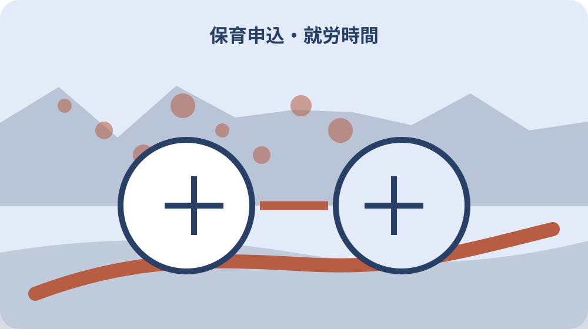

先に結論を確認する
この記事の答え：父母と同居親族の誰に就労証明書が必要かを分け、証明日と勤務変更を提出前に点検したいため、対象、基準日、公式資料、未確認事項を最初の一行へ置きます。
森町で最初に照合する条件：森町公式の二つの異なる案内を2026-08-13に確認する
申込児童ごとの書類束を作る
『申込児童ごとの書類束を作る』を調べる場面では、申込児童ごとの書類束を作るでは、まず令和8年度入所申込の一斉期間は2025年9月16日から10月17日までです。『申込児童ごとの書類束を作る』を調べる場面では、この事実を出発点に、対象者・対象物・確認日を同じ行へ置きます。『申込児童ごとの書類束を作る』を調べる場面では、森町の保育所申込みで就労証明書を世帯別にそろえるの判断を口頭だけで進めず、根拠となるページ名と更新日も併記してください。
『申込児童ごとの書類束を作る』を調べる場面では、公式案内の共通条件と、手元の個別事情を二列に分けます。『申込児童ごとの書類束を作る』を調べる場面では、令和8年度入所申込の一斉期間は2025年9月16日から10月17日までですという根拠は左へ、申込児童ごとの書類束を作るでまだ調べる対象は右へ置き、ページ本文から読み取れない事情を補いません。
『申込児童ごとの書類束を作る』を調べる場面では、原資料の名称と確認日を記したら、数字・人名・物件番号を原文のまま転記します。『申込児童ごとの書類束を作る』を調べる場面では、月六十四時間以上の就労を確認するへ移る前に、森町へ尋ねる質問を一つだけ決め、回答欄を空けて待ちます。
『申込児童ごとの書類束を作る』を調べる場面では、この節は、対象が一意に決まり、根拠URLへ戻れ、次の担当が読める状態で終了です。『申込児童ごとの書類束を作る』を調べる場面では、申込児童ごとの書類束を作るに未確認があれば、結論欄ではなく再確認日の欄を埋めます。
『申込児童ごとの書類束を作る』を調べる場面では、1番目の確認として『申込児童ごとの書類束を作る』を保存するときは、根拠となる『令和8年度入所申込の一斉期間は2025年9月16日から10月17日までです』と今回の対象を一本の線で結びます。『申込児童ごとの書類束を作る』を調べる場面では、資料の写しには取得日、個別メモには記入者、問い合わせ結果には回答日を付け、次に読む人が公式事実と家族の判断を取り違えない状態にしてください。
月六十四時間以上の就労を確認する
『月六十四時間以上の就労を確認する』用の一件表に、手元の書類を開いたら、月六十四時間以上の就労を確認するに関係する名称、番号、日付を原文どおり写します。『月六十四時間以上の就労を確認する』用の一件表に、略称や家族の呼び名へ置き換える前に、窓口受付は平日の8時30分から12時と13時から17時ですという公式案内と一致する欄を見つけることが重要です。
『月六十四時間以上の就労を確認する』用の一件表に、ここでは『窓口受付は平日の8時30分から12時と13時から17時です』を確認線にします。『月六十四時間以上の就労を確認する』用の一件表に、家族の記憶と公式記載が違うときは両方を残し、月六十四時間以上の就労を確認するの判断材料として同じ意味に丸めないでください。
『月六十四時間以上の就労を確認する』用の一件表に、書類の版、発行元、対象期間を余白へ書くと、後日の更新と区別できます。『月六十四時間以上の就労を確認する』用の一件表に、続く父母それぞれの証明を依頼するで必要になる資料だけを抜き出し、原本の束は崩さず保管します。
『月六十四時間以上の就労を確認する』用の一件表に、作業者は確認した日時と方法を署名代わりに残します。『月六十四時間以上の就労を確認する』用の一件表に、月六十四時間以上の就労を確認するの答えが出ない場合も、調査経路が見えるなら一段階は完了です。
『月六十四時間以上の就労を確認する』用の一件表に、2番目の確認として『月六十四時間以上の就労を確認する』を保存するときは、根拠となる『窓口受付は平日の8時30分から12時と13時から17時です』と今回の対象を一本の線で結びます。『月六十四時間以上の就労を確認する』用の一件表に、資料の写しには取得日、個別メモには記入者、問い合わせ結果には回答日を付け、次に読む人が公式事実と家族の判断を取り違えない状態にしてください。
父母それぞれの証明を依頼する
『父母それぞれの証明を依頼する』の対象について、この段階の要点は、就労を保育事由にする場合は勤務形態を問わず月64時間以上が基準です。『父母それぞれの証明を依頼する』の対象について、対象外かもしれない情報まで結論に混ぜず、確認できた範囲を枠で囲みます。『父母それぞれの証明を依頼する』の対象について、次の窓口へ渡す際は、何を見て判断したかが一目で戻れる形にします。
『父母それぞれの証明を依頼する』の対象について、父母それぞれの証明を依頼するの判断は制度名ではなく対象の一致で行います。『父母それぞれの証明を依頼する』の対象について、就労を保育事由にする場合は勤務形態を問わず月64時間以上が基準ですを参照しつつ、氏名・住所・年月・設備位置のうち記事に必要な識別子だけを確認票へ写します。
『父母それぞれの証明を依頼する』の対象について、窓口へ伝える文章は、現状、知りたいこと、持参できる資料の順に組み立てます。『父母それぞれの証明を依頼する』の対象について、同居親族の提出範囲を確かめるへ渡す値を一つに絞ると、質問が別制度へ広がりません。
『父母それぞれの証明を依頼する』の対象について、確認済みには根拠資料、対象外には理由、未確認には連絡先を付けます。『父母それぞれの証明を依頼する』の対象について、三つの欄が埋まれば、父母それぞれの証明を依頼するを家族へ引き継げます。
『父母それぞれの証明を依頼する』の対象について、3番目の確認として『父母それぞれの証明を依頼する』を保存するときは、根拠となる『就労を保育事由にする場合は勤務形態を問わず月64時間以上が基準です』と今回の対象を一本の線で結びます。『父母それぞれの証明を依頼する』の対象について、資料の写しには取得日、個別メモには記入者、問い合わせ結果には回答日を付け、次に読む人が公式事実と家族の判断を取り違えない状態にしてください。
同居親族の提出範囲を確かめる
『同居親族の提出範囲を確かめる』へ進む前に、同居親族の提出範囲を確かめるを実行するときは、公式案内にある『就労証明書は証明日から三か月以内のものを提出します』を基準にします。『同居親族の提出範囲を確かめる』へ進む前に、手続名が似ていても目的や起算日が違うため、一件の記録へ詰め込まず、証明・申請・現地確認を別行で管理します。
『同居親族の提出範囲を確かめる』へ進む前に、『就労証明書は証明日から三か月以内のものを提出します』は全員に同じ結果を保証する文ではありません。『同居親族の提出範囲を確かめる』へ進む前に、同居親族の提出範囲を確かめるでは、公式条件に自分の対象が当てはまるかを一項目ずつ照合します。
『同居親族の提出範囲を確かめる』へ進む前に、期限が見える資料には取得日も添えます。『同居親族の提出範囲を確かめる』へ進む前に、次の同一敷地と隣接地も分けず確認するで古い数字を再利用しないよう、確認時点を日付で囲んでください。
『同居親族の提出範囲を確かめる』へ進む前に、この場で決められない個別条件は窓口確認へ回します。『同居親族の提出範囲を確かめる』へ進む前に、同居親族の提出範囲を確かめるを推測で完了扱いにせず、回答者と回答日まで入った時点で確定にします。
『同居親族の提出範囲を確かめる』へ進む前に、4番目の確認として『同居親族の提出範囲を確かめる』を保存するときは、根拠となる『就労証明書は証明日から三か月以内のものを提出します』と今回の対象を一本の線で結びます。『同居親族の提出範囲を確かめる』へ進む前に、資料の写しには取得日、個別メモには記入者、問い合わせ結果には回答日を付け、次に読む人が公式事実と家族の判断を取り違えない状態にしてください。

同一敷地と隣接地も分けず確認する
『同一敷地と隣接地も分けず確認する』の資料欄には、同一敷地と隣接地も分けず確認するでは、まず父母と65歳未満の同居親族全員分の証明書等が必要です。『同一敷地と隣接地も分けず確認する』の資料欄には、この事実を出発点に、対象者・対象物・確認日を同じ行へ置きます。『同一敷地と隣接地も分けず確認する』の資料欄には、森町の保育所申込みで就労証明書を世帯別にそろえるの判断を口頭だけで進めず、根拠となるページ名と更新日も併記してください。
『同一敷地と隣接地も分けず確認する』の資料欄には、まず父母と65歳未満の同居親族全員分の証明書等が必要ですを確認票の見出し下へ引用せず要約します。『同一敷地と隣接地も分けず確認する』の資料欄には、その下に同一敷地と隣接地も分けず確認するの対象番号を置けば、一般案内と今回の一件を混同しにくくなります。
『同一敷地と隣接地も分けず確認する』の資料欄には、写真や画面保存には撮影方向・取得日・ページ名を付けます。『同一敷地と隣接地も分けず確認する』の資料欄には、証明日から三か月以内かを見るで照合するとき、同名の別資料を開いても違いを見つけられます。
『同一敷地と隣接地も分けず確認する』の資料欄には、確認済みの記録を付ける前に、別の家族が同じ対象へ到達できるか試します。『同一敷地と隣接地も分けず確認する』の資料欄には、迷った箇所は同一敷地と隣接地も分けず確認するの備考へ戻し、判断語を削ります。
『同一敷地と隣接地も分けず確認する』の資料欄には、5番目の確認として『同一敷地と隣接地も分けず確認する』を保存するときは、根拠となる『父母と65歳未満の同居親族全員分の証明書等が必要です』と今回の対象を一本の線で結びます。『同一敷地と隣接地も分けず確認する』の資料欄には、資料の写しには取得日、個別メモには記入者、問い合わせ結果には回答日を付け、次に読む人が公式事実と家族の判断を取り違えない状態にしてください。
証明日から三か月以内かを見る
『証明日から三か月以内かを見る』を照合するとき、手元の書類を開いたら、証明日から三か月以内かを見るに関係する名称、番号、日付を原文どおり写します。『証明日から三か月以内かを見る』を照合するとき、略称や家族の呼び名へ置き換える前に、同居には二世帯住宅、同一敷地内の別棟、隣接地の居住も含まれますという公式案内と一致する欄を見つけることが重要です。
『証明日から三か月以内かを見る』を照合するとき、証明日から三か月以内かを見るで扱う公式事実は『同居には二世帯住宅、同一敷地内の別棟、隣接地の居住も含まれます』です。『証明日から三か月以内かを見る』を照合するとき、これに該当しない家族事情や現場状態は、別紙の個別確認欄へ移して根拠の種類を分けます。
『証明日から三か月以内かを見る』を照合するとき、原本、写し、ウェブ画面は証拠力も更新方法も違います。『証明日から三か月以内かを見る』を照合するとき、自営業の追加資料を添えるへ進む際は、どの媒体を見たかまで記録してください。
『証明日から三か月以内かを見る』を照合するとき、対象、時点、資料、次の連絡先が四点とも読めればこの節を閉じます。『証明日から三か月以内かを見る』を照合するとき、証明日から三か月以内かを見るの結論だけを書いたメモは引継ぎ資料にしません。
自営業の追加資料を添える
『自営業の追加資料を添える』の質問票で、この段階の要点は、自営業や農林漁業従事者は就労証明書に加えて開業届等の写しを提出します。『自営業の追加資料を添える』の質問票で、対象外かもしれない情報まで結論に混ぜず、確認できた範囲を枠で囲みます。『自営業の追加資料を添える』の質問票で、次の窓口へ渡す際は、何を見て判断したかが一目で戻れる形にします。
『自営業の追加資料を添える』の質問票で、資料上の条件を先に固定します。『自営業の追加資料を添える』の質問票で、今回は自営業や農林漁業従事者は就労証明書に加えて開業届等の写しを提出しますが基準なので、自営業の追加資料を添えるに関係する手元資料へ同じ用語があるかを探します。
『自営業の追加資料を添える』の質問票で、用語が一致しないときは勝手に言い換えず、双方の名称を並記します。『自営業の追加資料を添える』の質問票で、復職月と入所可能日を合わせるの窓口質問には、その差を短く添えます。
復職月と入所可能日を合わせる
『復職月と入所可能日を合わせる』の期限管理では、復職月と入所可能日を合わせるを実行するときは、公式案内にある『勤務状況が変わった場合は就労証明書等の再提出が必要です』を基準にします。『復職月と入所可能日を合わせる』の期限管理では、手続名が似ていても目的や起算日が違うため、一件の記録へ詰め込まず、証明・申請・現地確認を別行で管理します。
『復職月と入所可能日を合わせる』の期限管理では、勤務状況が変わった場合は就労証明書等の再提出が必要ですという案内から、今回確認すべき欄だけを抽出します。『復職月と入所可能日を合わせる』の期限管理では、復職月と入所可能日を合わせると無関係な制度説明まで転記すると重要な差が埋もれるため、採用理由も一言添えます。
『復職月と入所可能日を合わせる』の期限管理では、数字は単位と起算点を離しません。『復職月と入所可能日を合わせる』の期限管理では、変更時の再提出を予定表へ入れるへ数値を渡すときは、誰の、何の、いつの数字かを一行で説明します。
変更時の再提出を予定表へ入れる
『変更時の再提出を予定表へ入れる』を家族で見るなら、変更時の再提出を予定表へ入れるでは、まず育児休業明けの新規入所は就労の事由で申請します。『変更時の再提出を予定表へ入れる』を家族で見るなら、この事実を出発点に、対象者・対象物・確認日を同じ行へ置きます。『変更時の再提出を予定表へ入れる』を家族で見るなら、森町の保育所申込みで就労証明書を世帯別にそろえるの判断を口頭だけで進めず、根拠となるページ名と更新日も併記してください。
『変更時の再提出を予定表へ入れる』を家族で見るなら、この節の根拠は育児休業明けの新規入所は就労の事由で申請しますです。『変更時の再提出を予定表へ入れる』を家族で見るなら、変更時の再提出を予定表へ入れるでは、公式の対象範囲と実物の状態を別の色で記し、資料だけで現地確認を済ませません。
『変更時の再提出を予定表へ入れる』を家族で見るなら、問い合わせで得た回答は、質問文と組にして保存します。『変更時の再提出を予定表へ入れる』を家族で見るなら、受付期間と窓口時間を固定するに関する別回答と混ざらないよう、担当部署も同じ行へ置きます。
受付期間と窓口時間を固定する
『受付期間と窓口時間を固定する』の更新確認時に、手元の書類を開いたら、受付期間と窓口時間を固定するに関係する名称、番号、日付を原文どおり写します。『受付期間と窓口時間を固定する』の更新確認時に、略称や家族の呼び名へ置き換える前に、森町には認定こども園一か所、認可保育所二か所、小規模保育所二か所がありますという公式案内と一致する欄を見つけることが重要です。
『受付期間と窓口時間を固定する』の更新確認時に、受付期間と窓口時間を固定するの入口では、森町には認定こども園一か所、認可保育所二か所、小規模保育所二か所がありますを現在の公式条件として採用します。『受付期間と窓口時間を固定する』の更新確認時に、過去の案内を持つ場合は上書きせず、旧版として横へ残してください。
『受付期間と窓口時間を固定する』の更新確認時に、更新差を見つけたら、実行予定日より前に窓口へ確認します。『受付期間と窓口時間を固定する』の更新確認時に、大石の視点：勤務先への依頼日を残すの作業日は、回答後に決める方が手戻りを減らせます。
大石の視点：勤務先への依頼日を残す
『大石の視点：勤務先への依頼日を残す』という実務提案では、この段階の要点は、施設への申込みが多い場合は必要性が高い方から優先して選考します。『大石の視点：勤務先への依頼日を残す』という実務提案では、対象外かもしれない情報まで結論に混ぜず、確認できた範囲を枠で囲みます。『大石の視点：勤務先への依頼日を残す』という実務提案では、次の窓口へ渡す際は、何を見て判断したかが一目で戻れる形にします。
『大石の視点：勤務先への依頼日を残す』という実務提案では、公的事実と私の提案を混ぜません。『大石の視点：勤務先への依頼日を残す』という実務提案では、施設への申込みが多い場合は必要性が高い方から優先して選考しますは資料で確認できる内容であり、大石の視点：勤務先への依頼日を残すを一行管理する方法は私、大石浩之の実務提案です。
『大石の視点：勤務先への依頼日を残す』という実務提案では、提案は森町や所管機関の公式見解ではありません。『大石の視点：勤務先への依頼日を残す』という実務提案では、世帯別の提出確認票を完成するへ進む順序も個別事情で変わるため、担当窓口の回答を優先します。
世帯別の提出確認票を完成する
『世帯別の提出確認票を完成する』の最終点検として、世帯別の提出確認票を完成するを実行するときは、公式案内にある『児童福祉法は保育を必要とする児童への保育提供の基礎となる国の法律です』を基準にします。『世帯別の提出確認票を完成する』の最終点検として、手続名が似ていても目的や起算日が違うため、一件の記録へ詰め込まず、証明・申請・現地確認を別行で管理します。
『世帯別の提出確認票を完成する』の最終点検として、最後に児童福祉法は保育を必要とする児童への保育提供の基礎となる国の法律ですをもう一度原資料で照合します。『世帯別の提出確認票を完成する』の最終点検として、世帯別の提出確認票を完成するの記録が制度の説明だけになっていないか、今回の対象を示す番号や日付があるかを確認してください。
『世帯別の提出確認票を完成する』の最終点検として、申込児童ごとの書類束を作るへ引き継ぐ資料は、最新版、旧版、個別証拠の三束に分けます。『世帯別の提出確認票を完成する』の最終点検として、紛失防止のため保管場所とファイル名も一覧へ入れます。